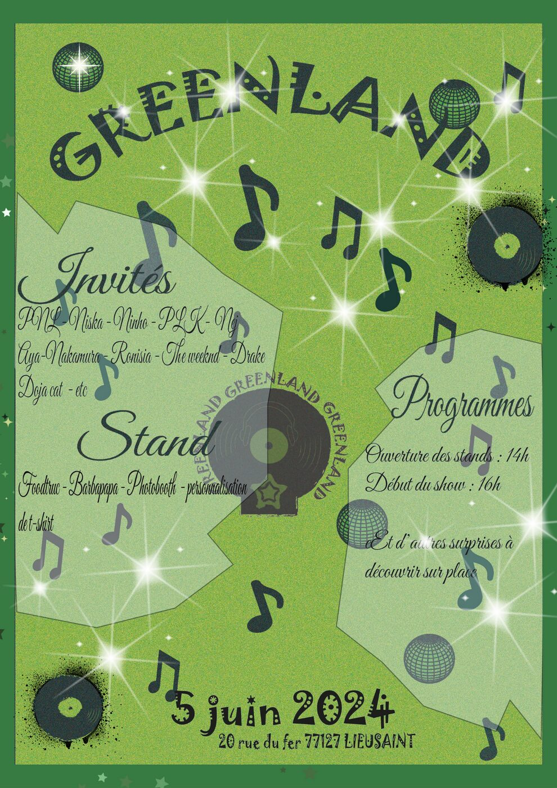
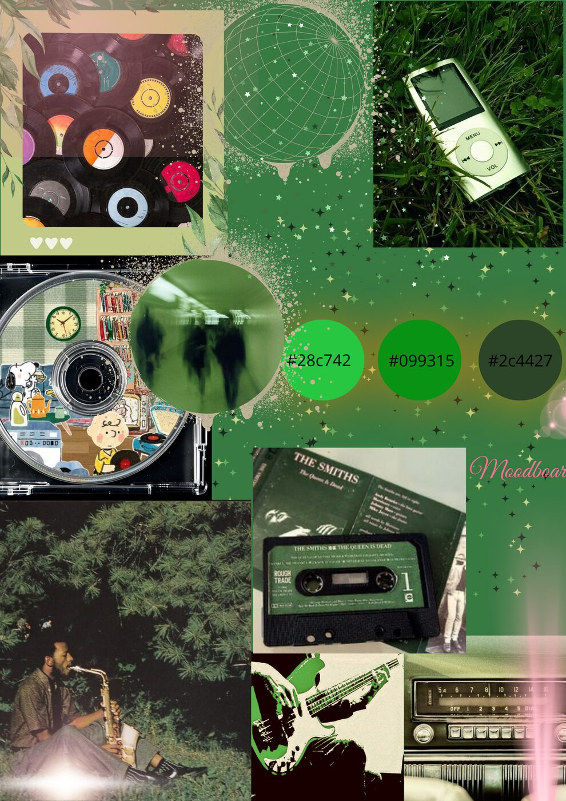
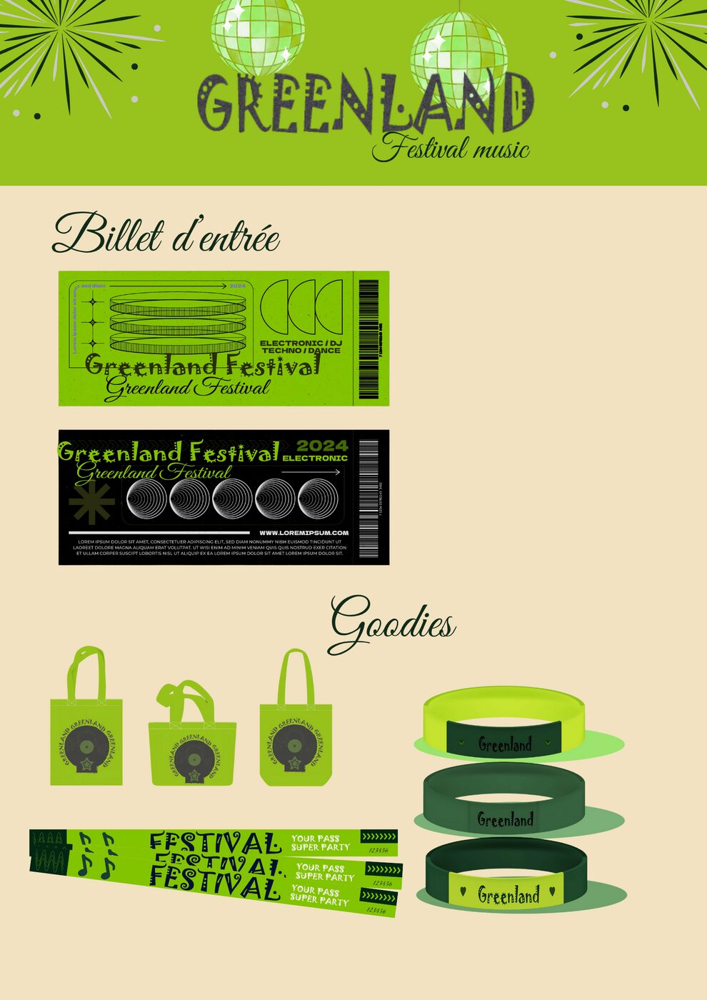

Festival Greenland
Création de l'affiche du festival fictif Greenland, à Lieusaint.

Cliquer sur l'affiche pour l'agrandirConcept
Identité visuelle verte et festive, typographie expressive, notes de musique et vinyles, pour un line-up fictif réunissant PNL, Niska, Ninho, Aya Nakamura, Drake, Doja Cat et bien d'autres.


Compétences mobilisées
AfficheÉvénementielTypographieIllustrator